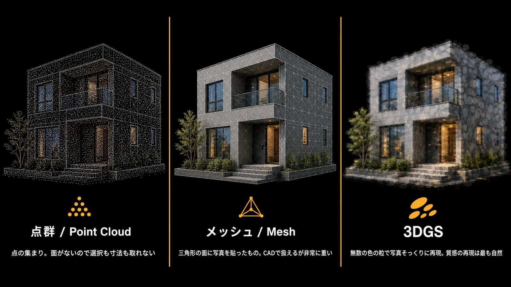
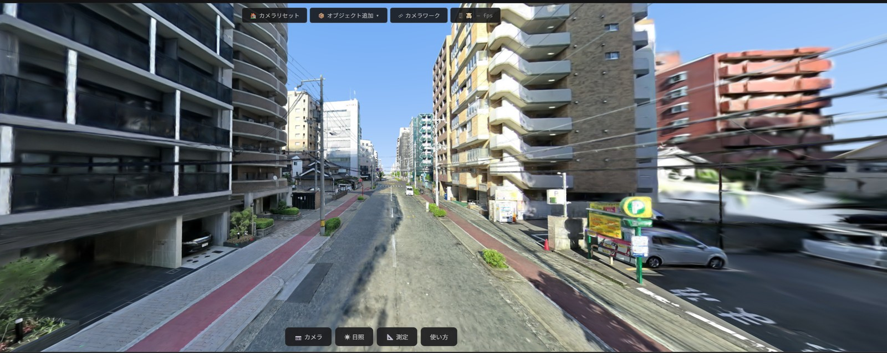
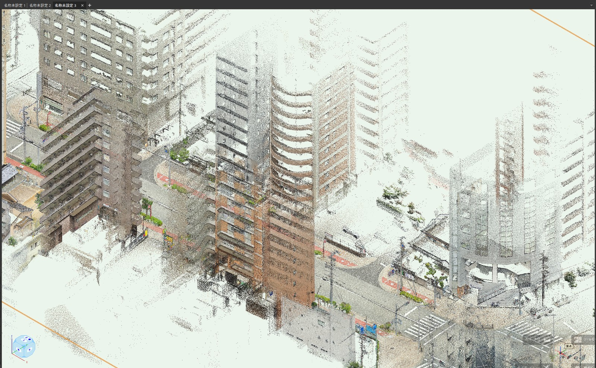
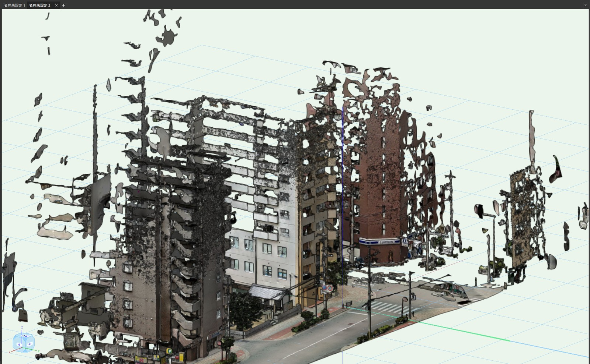
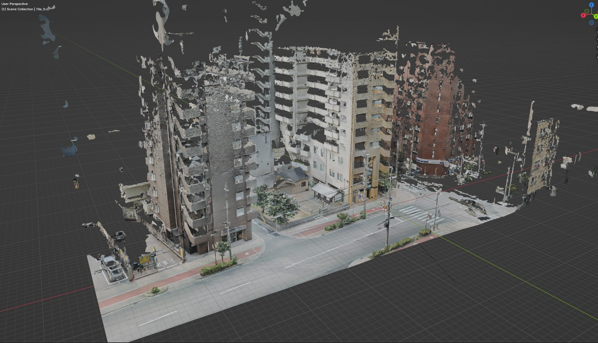
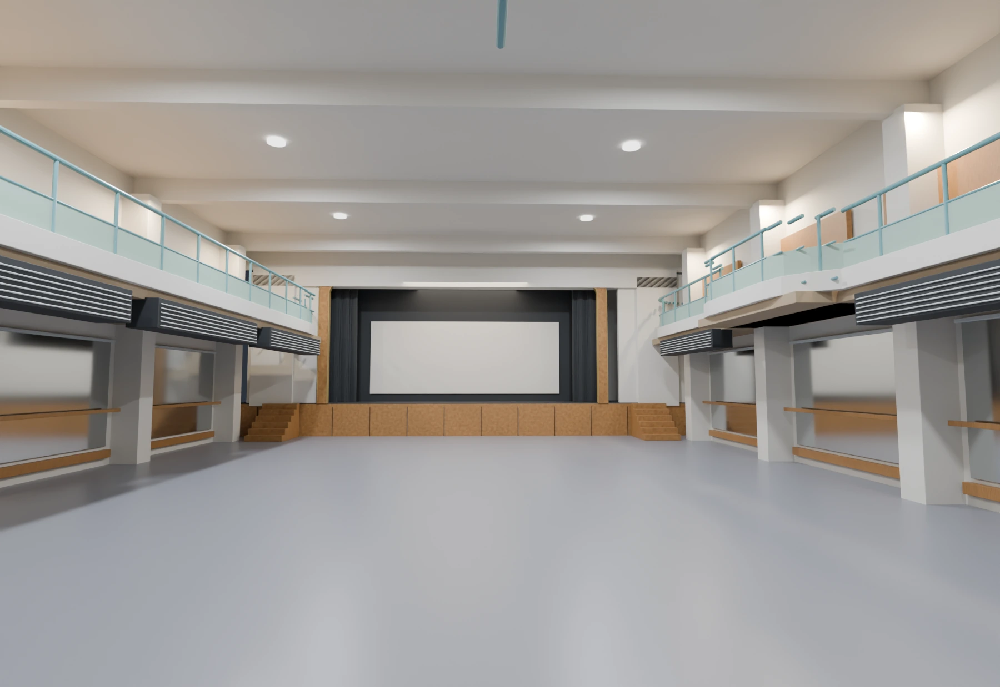
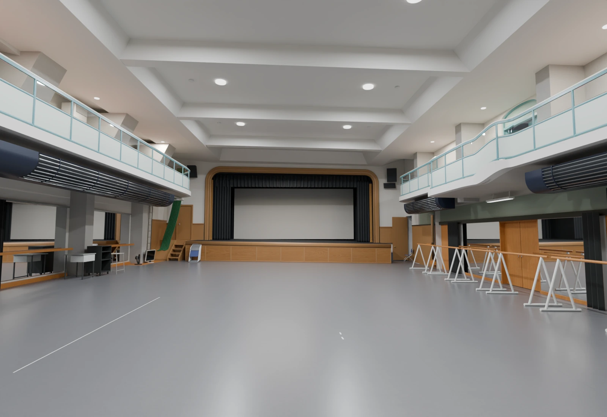
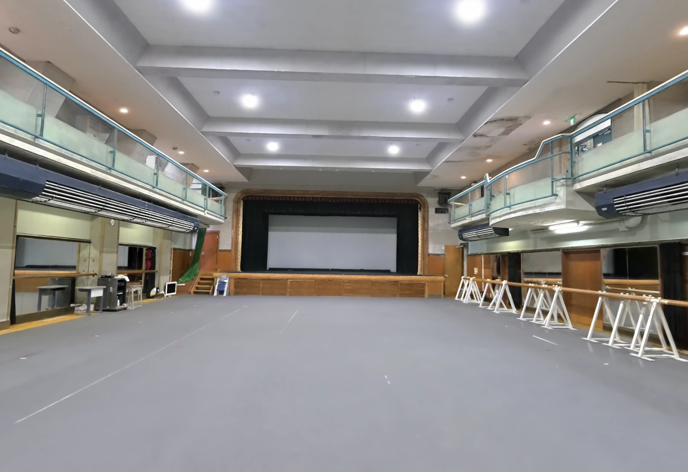

3つの形式を短く整理
同じ撮影から、用途の違う3種類のデータを作れます。
- ① 3DGS ── 色の粒で写真に近い見た目を再現します。現況確認と共有向きです。
- ② 点群 ── 計測した座標の集まりです。寸法確認とトレースに使えます。
- ③ メッシュ ── 三角形の面に写真を貼った一般的な3D形状です。面はありますが、スキャン由来のままでは重くなります。

01 ① 3DGS ── Vectorworksが非対応
Vectorworksは3DGSに対応していません。
3DGSのデータには、点の位置だけでなく「どんな色か」「どのくらい透けるか」「どんな形の粒か」といった情報が一緒に入っていますが、Vectorworksにはこれらを読む機能がありません。
読み込むと位置の情報だけを取り出して、色を含む残りをすべて捨ててしまいます。
画面に出るのは黒くまばらな点の集まりです。
色を一般的な点群へ焼き込んでから読ませることはできますが、見る角度による質感変化は失われます。変換後は3DGSではなく、次の点群として扱います。

02 ② 点群 ── 測れるが、面がない
点群はVectorworksが元から対応している形式なので、変換なしでそのまま読み込めます。
色の再現という一点だけを見れば、3つのなかでこれが最良です。

点にはスナップが効くため、距離の計測や寸法線の作成ができます。
ただし面はないので、壁を選んで押し出すような編集はできません。計測と下敷きまでが点群の役割です。
03 ③ メッシュ ── 表示できるが、作業には重い
メッシュは面を選択でき、写真の質感も表示されます。
問題は速度です。同じデータをBlenderでも開いて比べました。
| 作業 | Vectorworks Spotlight 2026 | Blender 4.5 |
|---|---|---|
| 読み込み | 約20〜30秒 | 数秒 |
| 視点の切り替え | 約1.5秒待つ | 待ちなしで動く |
| その他の操作 | 0.3〜2秒 | そのまま普通に操作できる |
| 質感の表示 | 正しく出る | 問題なく表示 |
視点を変えるたびに1.5秒待つのは、作図しながら何度も視点を変える作業ではかなり煩わしい速度です。
ただし「開けないほど重い」わけではありません。
そしてこれは、街区全体を3分割したうちの1つ分だけを開いた状態での話です。
全体を読み込めば、さらに重くなります。


04 ④ 別のホールで編集モデルを制作
ここまでの①〜③は、街区スキャンをVectorworksへ直接取り込んだ検証です。
次に別のホールを使い、3DGSと撮影画像を基準にして、Blenderで編集できるモデルを作る工程を試しました。
街区とホールは別の撮影データですが、「スキャンをそのままCADへ入れるのではなく、見た目を参照しながら必要な形だけ作り直す」という解決方法を確認するための検証です。


生のスキャンメッシュを軽くするだけではありません。3DGSを比較の基準として残し、同じカメラから何度も見比べながら、必要な形を少ない面数で再構成しました。
実物と完全には一致していないため、現状は設計モデルではなく、手動修正を前提としたラフモデルです。

3DGSからホールの編集モデルを作った工程と、場所ごとの比較はこちらの記事にまとめています。
05 ⑤ 編集モデルをVectorworksへつなぐ
- 3DGS ── 現況の見た目と全体関係を確認する比較基準として残します。
- 撮影画像 ── 薄い部材、壁際、材質など3DGSで崩れる部分を確認します。
- Blenderの編集モデル ── 必要な部材だけを軽量に作り、用途ごとに分けます。
- Vectorworks ── 軽量モデルを下敷きに、クラス・レイヤ・照明・什器・図面を整えます。
Vectorworks 2026はOBJやIFCなどを読み込めます。形状参照ならOBJ、建築部材や階情報を渡す場合はIFCを候補にし、部材を絞って出力します。
今回のホールモデルをVectorworksへ読み込む検証は次の工程です。現時点では、読み込み後の編集性や速度まで確認済みとはしていません。
3DGS、Blender、Vectorworksは役割が違います。
見た目の基準、編集できる形、設計図面を分けてつなぐことで、スキャンの情報量を残しながらCADを重くしすぎずに使えます。
ロケハン3Dのビューアーを
実際に触ってみてください
CADに載せずに現況を共有するとはどういうことか、実際のスキャンデータを開いて確かめられます。
ブラウザだけで動き、インストールも追加のライセンスも不要です。
撮影から共有までの流れも含めて、デモでご説明します。